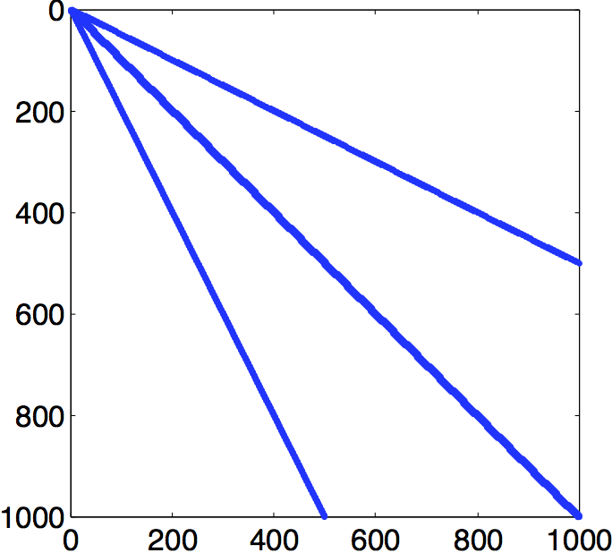
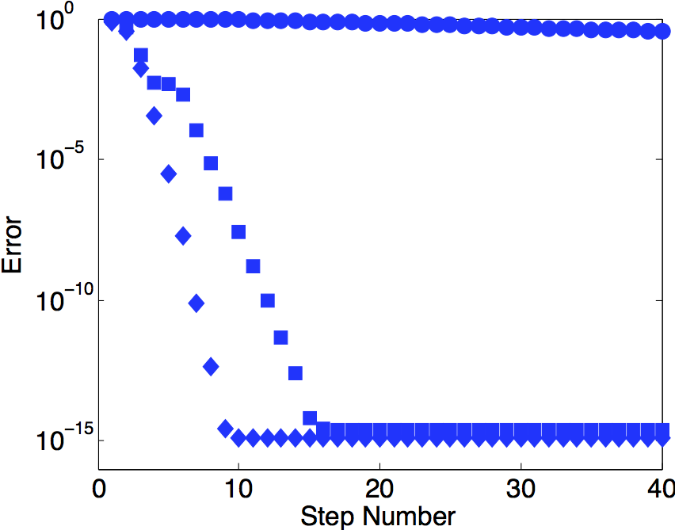
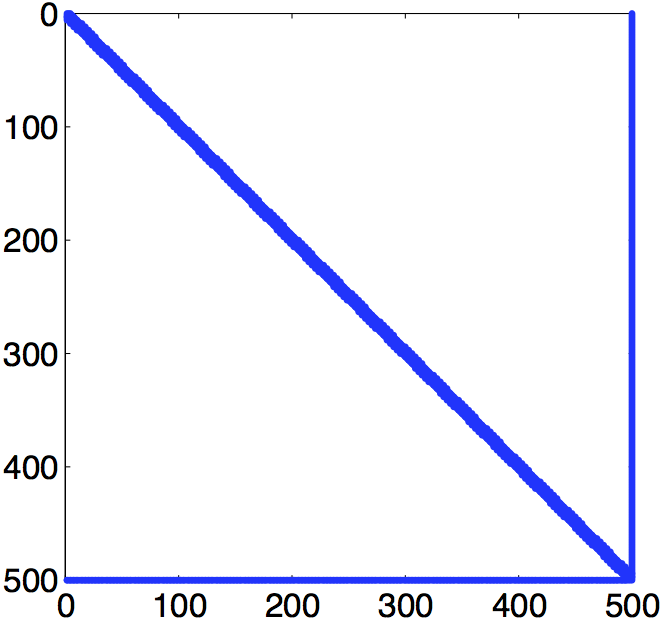
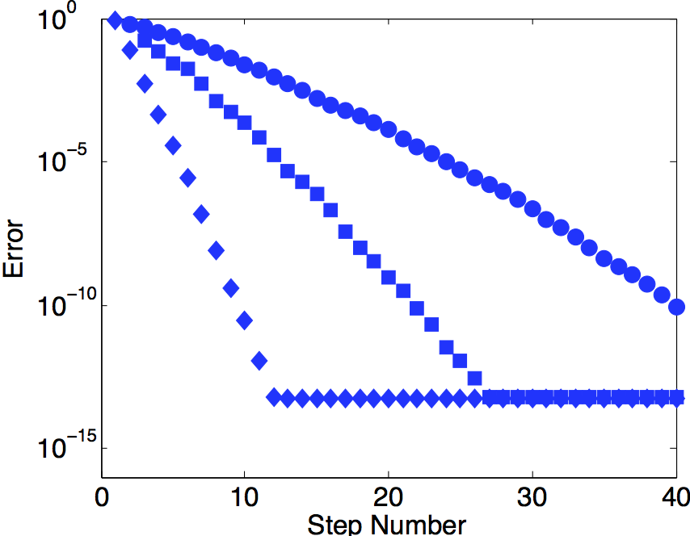

COMPUTER PROBLEMS 2.6
\(\def\ds{\displaystyle} \)
1 (a) The Conjugate Gradient loop written in pseudocode in the textbook can be
coded as follows.
function x=cg(a,b,n)
% Inputs: symm. pos. def. matrix a, right-hand side b, number of steps n
% Output: solution x
x=zeros(length(b),1);
r=b-a*x;
d=r;d1(:,1)=d;r1(:,1)=r;
for i=1:n
if max(abs(r))< eps break; end
alf=d'*r/(d'*a*d);
x=x+alf*d;
rold=r;
r=rold-alf*a*d;
beta=r'*r/(rold'*rold);
d=r+beta*d;d1(:,i+1)=d;r1(:,i+1)=r;
end
The test for \(r\) equal to zero uses eps, the machine epsilon.
The Matlab command
>> x=cg([1 0;0 2],[2;4],2)
returns the solution \(x=[2, 2]\).
1 (b) Applying the code from part (a) returns the solution \(x=[3, -1]\).
3 (a) The Conjugate Gradient code from Computer Problem 1 can be used with
a = hilb(4) and b = ones(4,1) to yield the solution \(x=[-4, 60, -180, 140]\)
after 4 steps.
3 (b) The exact solution
\(\ds x=[ -8,
504,
-7560,
46200,
-138600,
216216,
-168168,
51480].
\)
is approached after more than 20 steps of Conjugate Gradient.
5 Use Program 2.1, sparsesetup.m to define the matrix \(a\) and right-hand
side (b). For \(n=100\), Conjugate Gradient runs 34 steps before the residual \(r\) is
smaller than machine epsilon in the infinity norm. The final residual is
\(r\approx 9.76\times 10^{-17}\). For \(n=1000\), only 35 steps are needed to make the residual
\(r\approx 7.12\times 10^{-17}\). For \(n=10000\), 35 steps are needed to make the residual
\(r\approx 7.17\times 10^{-17}\).
7 Part (a) shows the output of Matlab spy> command on the matrix \(A\). The code shown in the answer to Computer Problem 1(a) above can be slightly modified to carry out the Preconditioned Conjugate Gradient Method outlined in pseudocode in the textbook. Applying this code to the \(A\) and \(b\) defined in the problem result in Part (b), showing the error as a function of step number for no preconditioner (circles), Jacobi preconditioner (squares), and Gauss-Seidel preconditioner (diamonds).


9 Part (a) shows the output of Matlab spy command on the matrix \(A\). Applying the code as described in the answer to Computer Problem 7 to the \(A\) and \(b\) defined in the problem result in Part (b), showing the error as a function of step number for no preconditioner (circles), Jacobi preconditioner (squares), and Gauss-Seidel preconditioner (diamonds).

